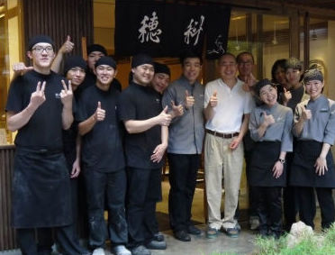

在穗科手打烏龍麵店裡，每一天下午或晚上營業結束後，都會有個小小的溫馨分享會，這個分享會名喚「認不是」與「找好處」，每個人從自己的不是開始說起，也從別人的好處找到努力的方向。
有一天，一位新來的夥伴分享著：「來這裡上班的第一天，就感覺到這裡很不一樣，第一天洗碗洗得很愉快，一位師傅還很親切地問我肚子會不會餓，接著就做了一碗冷麵給我吃。」
這位夥伴在分享時，渾然不察他口中的師傅，就是稻禾餐飲國際股份有限公司的總經理---嚴心鏞。
嚴心鏞曾說過-我有個夢想，
在台灣 有一個品牌能做到 堅持用好食材做健康的餐飲料理；
在台灣 有一家公司能做到 照顧同仁、感動客人的真心服務；
在台灣 有一家企業能做到 幫助年輕人達到創業發展的目標。

連到首頁
連到第二頁
連到第三頁
連到第五頁